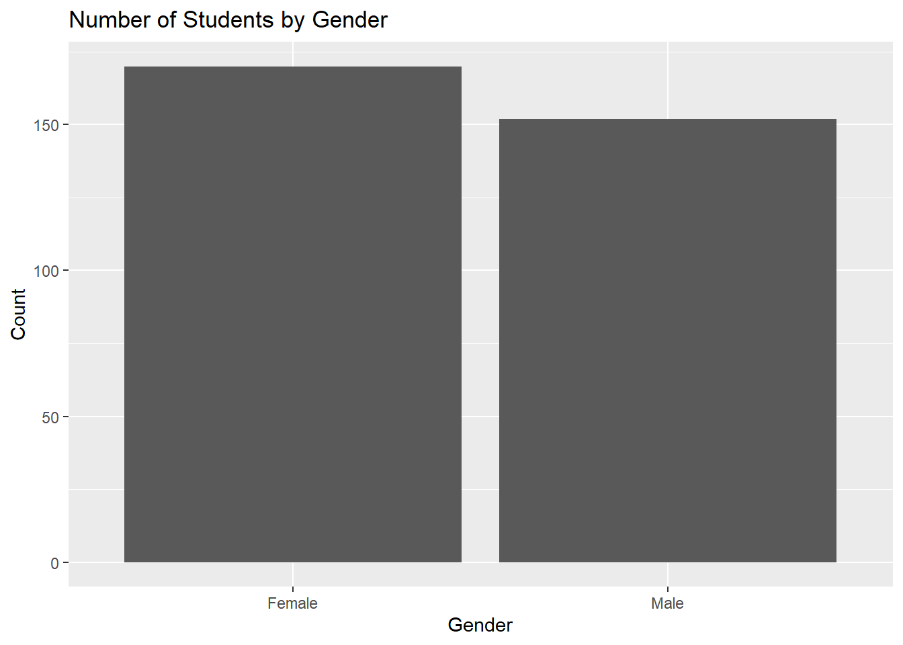
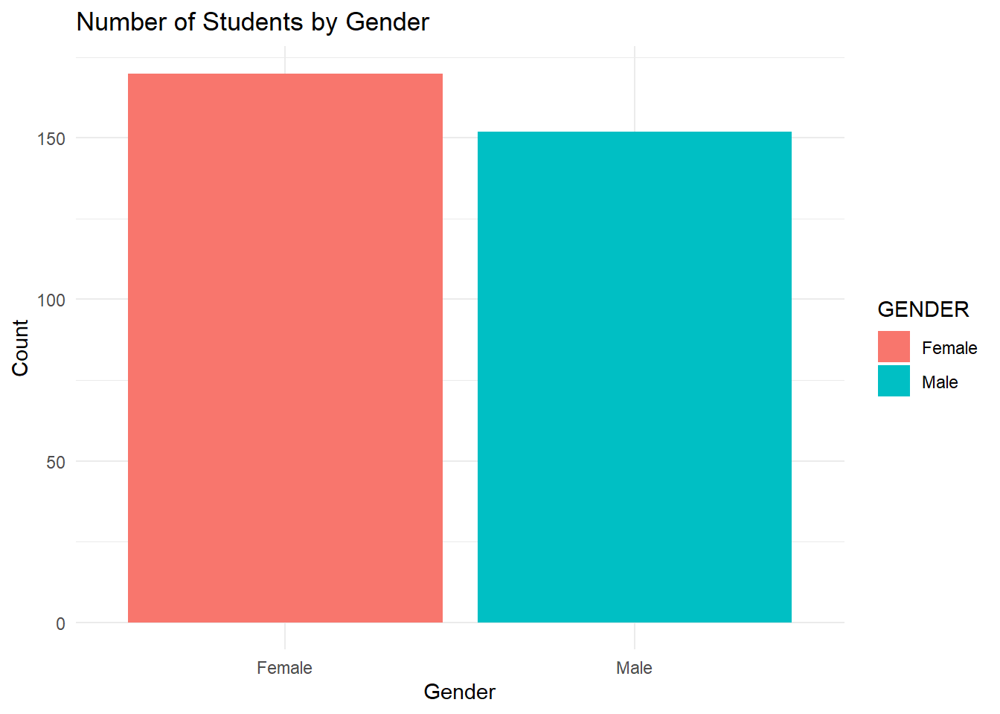
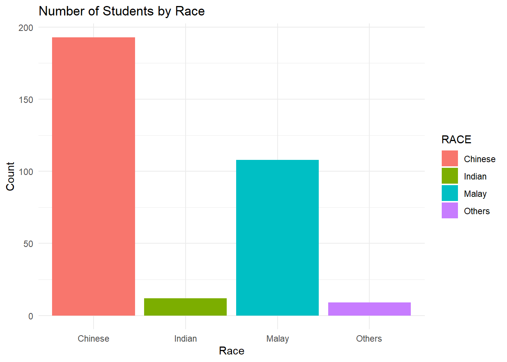
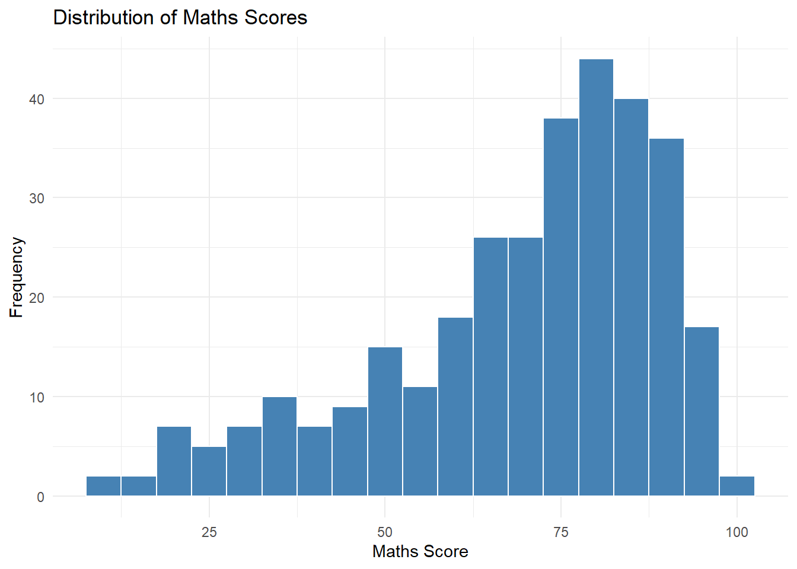
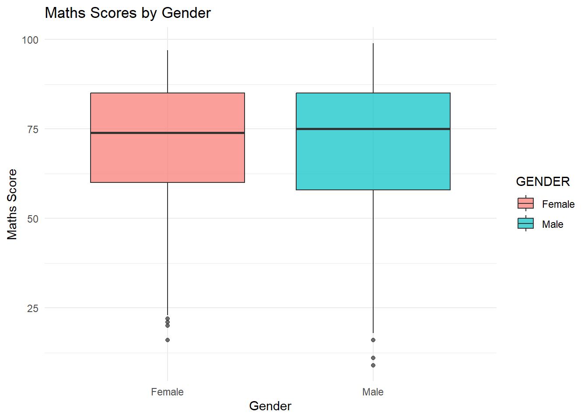
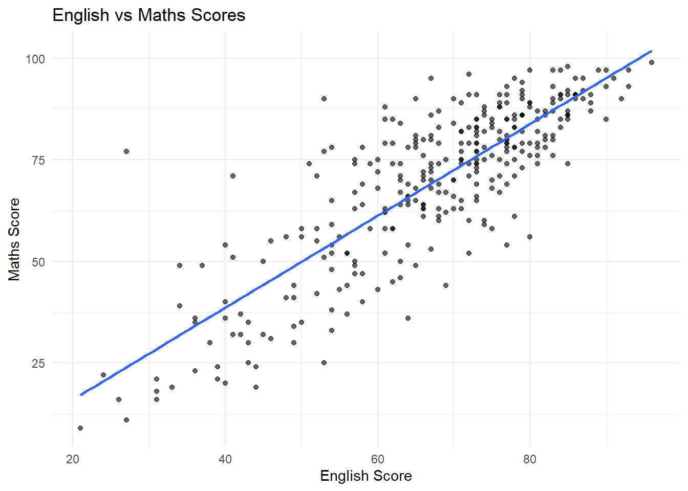

library(readr)
library(ggplot2)
library(dplyr)Exam Data Visualisation
This does three things:
readrreads the CSVggplot2makes the chartsdplyrhelps with simple data handling
1 Step 3: Read the CSV file
Add this next chunk:
exam_data <- read_csv("Exam_data.csv")Rows: 322 Columns: 7
── Column specification ────────────────────────────────────────────────────────
Delimiter: ","
chr (4): ID, CLASS, GENDER, RACE
dbl (3): ENGLISH, MATHS, SCIENCE
ℹ Use `spec()` to retrieve the full column specification for this data.
ℹ Specify the column types or set `show_col_types = FALSE` to quiet this message.This assumes your Quarto file and your CSV are in the same folder.
If your CSV is in another folder, then you need the correct file path instead.
2 Step 4: Preview the data
Add this:
head(exam_data)# A tibble: 6 × 7
ID CLASS GENDER RACE ENGLISH MATHS SCIENCE
<chr> <chr> <chr> <chr> <dbl> <dbl> <dbl>
1 Student321 3I Male Malay 21 9 15
2 Student305 3I Female Malay 24 22 16
3 Student289 3H Male Chinese 26 16 16
4 Student227 3F Male Chinese 27 77 31
5 Student318 3I Male Malay 27 11 25
6 Student306 3I Female Malay 31 16 16This lets you see the first few rows and confirm the file loaded properly.
You can also check the column names:
colnames(exam_data)[1] "ID" "CLASS" "GENDER" "RACE" "ENGLISH" "MATHS" "SCIENCE"3 Step 5: Make your first simple visualisation
3.1 Bar chart of gender
Now let’s start with the easiest plot.
ggplot(exam_data, aes(x = GENDER)) + geom_bar() + labs(
title = "Number of Students by Gender",
x = "Gender",
y = "Count" )
3.1.1 What this does
ggplot(exam_data, aes(x = GENDER))says: useexam_dataand putGENDERon the x-axisgeom_bar()automatically counts how many students are in each gender categorylabs()adds a chart title and axis labels
4 What you should expect
This will produce a bar chart with:
- one bar for Male
- one bar for Female
Since your dataset has both genders, this is a good first plot to understand category counts.
5 Step 6: Make it look a bit nicer
You can slightly improve the appearance:
ggplot(exam_data, aes(x = GENDER, fill = GENDER)) + geom_bar() + labs(
title = "Number of Students by Gender",
x = "Gender",
y = "Count" ) +
theme_minimal()
5.0.1 New parts here
fill = GENDERgives different colours to each gender bartheme_minimal()gives a cleaner style
6 Step 7: Render or preview
Now click:
- Render or
- Preview in RStudio.
You should now see your first chart in the output.
7 Step 8: Try a second bar chart
7.1 Bar chart of race
Now use the same idea for RACE:
ggplot(exam_data, aes(x = RACE, fill = RACE)) + geom_bar() + labs(
title = "Number of Students by Race",
x = "Race",
y = "Count" ) +
theme_minimal()
This shows how many students belong to each race category.
8 Step 9: First numerical visualisation
8.1 Histogram of Maths scores
Now let’s visualise a numerical variable.
ggplot(exam_data, aes(x = MATHS)) + geom_histogram(binwidth = 5, fill = "steelblue", color = "white") + labs(
title = "Distribution of Maths Scores",
x = "Maths Score",
y = "Frequency" ) +
theme_minimal()
8.1.1 What this does
x = MATHSputs maths marks on the x-axisgeom_histogram()groups the scores into intervalsbinwidth = 10means the bars cover ranges like 0–10, 10–20, 20–30, and so on
This helps you see:
- Where most students’ maths scores lie
- Whether the distribution is spread out
- Whether there are very low or very high scores
9 Step 10: Another useful plot
9.1 Boxplot of Maths by Gender
Now let’s compare marks across categories.
ggplot(exam_data, aes(x = GENDER, y = MATHS, fill = GENDER)) + geom_boxplot(alpha = 0.7) + labs(
title = "Maths Scores by Gender",
x = "Gender",
y = "Maths Score" ) +
theme_minimal()
9.1.1 Why this is useful
A boxplot helps you compare:
- Median score
- Spread of scores
- Possible outliers
So instead of just counting students, you are now comparing their performance.
10 Step 11: Scatter plot
10.1 English vs Maths
Now a relationship plot:
ggplot(exam_data, aes(x = ENGLISH, y = MATHS)) +
geom_point(alpha = 0.6) +
geom_smooth(method = "lm", se = FALSE) +
labs(
title = "English vs Maths Scores",
x = "English Score",
y = "Maths Score"
) +
theme_minimal()`geom_smooth()` using formula = 'y ~ x'
This helps answer:
- Do students who score higher in English also tend to score higher in Maths?
- Is there a visible positive trend?